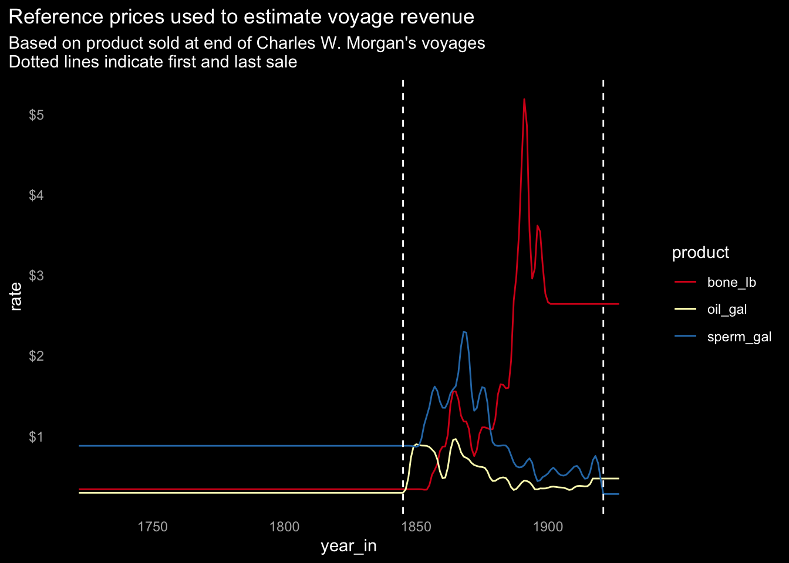

9 Financial returns
9.1 The New Bedford business model
As noted in The Economist (“Fin-Tech: Before There Were Tech Startups, There Was Whaling” 2015):
Overall returns in the whaling business in New Bedford between 1817 and 1892 averaged 14% a year—an impressive record by any standard.
New Bedford was not the only whaling port in America; nor was America the only whaling nation. Yet according to a study published in 1859, of the 900-odd active whaling ships around the world in 1850, 700 were American, and 70% of those came from New Bedford. The town’s whalers came to dominate the industry, and reap immense profits, thanks to a novel technology that remains relevant to this day. They did not invent a new type of ship, or a new means of tracking whales; instead, they developed a new business model that was extremely effective at marshalling capital and skilled workers despite the immense risks involved for both.
The whaling industry…was one of the first to grapple with the difficulty of aligning incentives among owners, managers and employees, according to Tom Nicholas and Jonas Peter Akins of Harvard Business School. In this model, there was no state backing. Managers held big stakes in the business, giving them every reason to attend to the interests of the handful of outside investors. Their stakes were held through carefully constructed syndicates and rarely traded; everyone was, financially at least, on board for the entire voyage. Payment for the crew came from a cut of the profits, giving them a pressing interest in the success of the voyage as well. As a consequence, decision-making could be delegated down to the point where it really mattered, to the captain and crew in the throes of the hunt, when risk and return were palpable….
At the top of the New Bedford hierarchy was an agent or firm of agents like Gideon Allen, responsible for the purchase and outfitting of the ship, the hiring of the crew and the sale of the catch. To give them an incentive to cut the best deals possible, the agents put up a big share of the investment. Those with the best reputation received better terms from the other investors. Captains, who ran the show while the ship was at sea, often put up capital as well. A similar system of incentives is used in the riskier reaches of the investment-management business today, notes Mr Nicholas.
Investors received half to two-thirds of the profits. The rest was divided among the crew in what was known as the “lay” system. A captain might get a 12th lay (one-twelfth of the remaining profit)…..
Every participant wanted to bring in returns quickly, but there were no artificial deadlines—nothing resembling what is now called “quarterly capitalism”. When whales became rare in accessible places, the crews from New Bedford extended their search to every corner of every ocean, however many years that took.
To ensure that they were not ruined by a few disastrous voyages, the whaling firms invested in multiple expeditions at the same time, much as the venture capitalists of today “spray and pray”. A study published in 1997 concluded that, of the 787 boats launched from New Bedford during the 18th century, 272 sank or were destroyed. The firm that belonged to George Howland was not atypical: of its 15 ships, between four and nine were at sea at any given moment. One was sunk by a whale, three lost at sea, two burned by their crews, one destroyed by a Confederate gunboat during America’s civil war and five abandoned in Arctic ice. Yet Howland died a millionaire in 1852.

9.2 The case of the Charles W. Morgan
The Charles W. Morgan was commissioned in 1841 from New Bedford, MA, and now is preserved at The Mystic Seaport Museum. Staff there compiled Statistical and Financial Results of the 37 Voyages of the ship Charles W. Morgan, helps to make concrete some of dynamics in the whaling industry. We should keep in mind the document’s provisos:
It should be noted that over the years during which the Charles W. Morgan was active, there were great fluctuations in the prices of the various commodities. For example, the price of sperm oil rose as high as $2.27 per gallon in 1867 and dropped as low as $0.30 per gallon in 1920. Whalebone rose from a low of $0.34 per pound in 1845 to a high of $5.35 per pound in 1892. Prices of the various commodities also fluctuated widely within a given year.
In 1868 some Grade A whale oil sold for $0.78 per gallon in New Bedford in May, whereas the average price for the whole year was $1.02. At the same time, some whalebone sold for $0.86 per pound, although the average price for the year was $1.24 per pound. On the other hand, some sperm oil sold for $1.80 per gallon in May, while the average price for the year was $1.78 per gallon.
Prices varied according to the quality of the product. The types of oil were sometimes separated into Grade A (best quality), Grade B (“dark and sour”), and Grade C (“black and stinking”). Bone prices varied according to length and place of origin. Long bone and that from the Arctic were more valuable than short pieces and that from the South Seas (See Elmo P. Hohman, The American Whaleman, p. 292).
Prices for whale oil peaked in the 1860s; sperm oil peaked shortly after. Both then entered a period of price decline that never recovered. Additionally, inflation over this time period further reduced real returns.
The collapse of sperm and whale oil prices suggests the main dynamic was a collapse in demand rather than supply (as would have been the case if whales had become too rare to meet demand).
In contrast, the price for baleen bone spiked in the 1890s, and the continuing high price for baleen bone when sales ended raises the question: Why did the owners of the Charles W. Morgan switch in 1906 from using the port of San Franciso as a base to hunt whales in the Pacific, returning the ship to the original port of New Bedford and hunting sperm oil and whale oil in the Atlantic? Did the population of baleen whales collapse in the Pacific? Was it too costly to fit out the ship on the West coast? Was the ship too old and of questionable seaworthiness? Were there other reasons? The home ports and hunting areas are listed in Appendix Section 11.6 Charles W. Morgan’s voyages.
Revenue peaked in the 1860s and declined as prices declined. There isn’t much difference between nominal dollars and 1845 dollars (adjusted based on estimated CPI (“Consumer Price Index, 1800-” 2022-08-26)) since inflation was low during this period (see Figure 11.2 Inflation (consumer price index) during the years of the Charles W. Morgan’s operation in the Appendix. For this reason, the other plots in this section are not adjusted for inflation.
It was advantageous to collect multiple products, since a crew didn’t know how many and what kinds of whales they would encounter.
9.3 Investment and return
Whaling was an uncertain business, but it offered the potential for great returns in the industry’s heyday. From the perspective of an investor in the Charles W. Morgan’s voyages, was it a good investment?
Let’s apply some hypothetical costs to the Charles W. Morgan’s voyages. These numbers may vary significantly from the actual numbers, which are not at hand, and as a convenience I’m simplifying matters. For example, fitting out for multi-year journeys cost more than short ones; I’m ignoring that.
In this simplified model of investment and return I use these hypothetical values (a.k.a. assumptions) for the three main costs to the investors:
- Cost to build the ship: $45,000 as noted in Whaling Ships – A Few Historical Details (Bierle 2017-06-15) and recognized over the first two voyages.
- Cost to fit out the ship for a voyage, including supplies needed for the crew: $7,000. This is a wild guess. Let’s assume it includes wharf fees, repairs, supplies, interest on money borrowed, insurance, and any other non-crew costs.
- Cost of the crew (percent of profits less cost of voyage paid at the voyage’s end). Assume 33.0% based on (“Whales and Hunting” 2022-08-18). A master could earn \(\frac{1}{8}^{th}\) (12.5%) share (Thorndike 2015) so let’s assume the rest of the crew shared 20.5%.
Annual returns of 19.7% would be quite good (were these numbers real). This is net of expenses and before taxes.
Also of note: the shorter voyages in the Pacific that started in the 1880s maintained a similar level of returns, which dropped only around the time the C.W. Morgan returned to the Atlantic in 1906.
9.4 Estimating the financial returns of other vessels’ voyages
The wide variation in product harvested per day and per km as seen in Section 8.4.3 Normalized product yield metrics suggests some voyages were a lot more successful than others. To explore this, I use the prices paid at the end of each Charles W. Morgan voyage as reference points by doing the following:
- Focus on the years when the Charles W. Morgan was in operation, since I have easily-accessible reference prices for this period.
- Use a spline to interpolate prices in years the Morgan was at sea and didn’t sell product; this avoids large step changes year-to-year in references prices.
- Use these reference prices to estimate the revenue resulting from all voyages for which there exists
year_indata in this period. - Since voyages were of varying duration, also look at normalized returns, for example: revenue per day for voyages for which there is sufficient data.
The resulting revenue estimates for other voyages are definitely imperfect, however they likely are in the neighborhood and useful for looking at the revenue distribution.

9.4.1 Returns by voyage
The revenue histogram below includes all voyages with year_in data. The most reliable are revenue in the years with Charles W. Morgan’s reference prices, shown in yellow below.
The cumulative density plot below includes all voyages in the decades the Charles W. Morgan operated, grouped by decade. Over time the median return declined.

9.4.2 Normalized return
At the same time, revenue per day increased, since voyages were shorter over time.
Note that I’m including the simulated data introduced in Section 3.3 Voyage duration so that there are more voyages (828) with voyage duration in the period that the C.W. Morgan’s operated. I excluded voyages less than 30 days.
Surprisingly, the average and distribution of revenue per day is quite similar for other voyages that sold product during the years the Charles W. Morgan operated (for the set of n = 828 voyages). Perhaps whaling masters had a revenue objective and adjusted the duration of their voyages accordingly.
The plot below has duration on the X axis instead of the year_in: again, the average revenue per day is remarkably consistent over voyages long and short.
From the 1860s on there were a minority of voyages that were very productive very quickly. Presumably the voyages returned earlier than anticipated once their holds were full.
9.5 Summary
Over time the volume of product harvested declined, prices declined, inflation took its bite, and whereas for a while there were three primary products that provided a means to spread the risk, ventures became increasingly dependent on sperm oil (see Section 7.6 Relative portion by species per decade). Not shown here (but explained below), cost of wages rose as the industrial revolution gained momentum, and American whaling lost its competitive edge compared to other countries.
Perhaps in response to these changing dynamics, the Charles W. Morgan undertook multi-year voyages until about 1885, then mostly yearly voyages.
Derek Thompson provides a good summary of some of the dynamics that brought the American Whaling movement to an end in The Spectacular Rise and Fall of U.S. Whaling: An Innovation Story (Thompson 2012):
In the middle of the 19th century, whale oil prices increased, which should have led to more production. But output never recovered after the 1850s even as whaling continued to grow around the world. Why did Americans give up?
The answer from Davis, Gallman, and Gleiter will also look familiar to a modern business audience: US workers got too darn expensive, and other countries stole our share of the whale business.
Thanks to the dry-land industrial revolution, “higher wages, higher opportunity costs of capital, and a plethora of entrepreneurial alternatives turned Americans toward the domestic economy,” the authors write. Meanwhile, slower growth overseas made whaling more attractive to other countries. “Lower wages, lower opportunity costs of capital, and a lack of entrepreneurial alternatives pushed [people like the] Norwegians into exploiting the whale stocks,” they continue.
Between the 1860s and the 1880s the wages of average US workers grew by a third, making us three times more expensive than your typical Norwegian seaman. Whales aren’t national resources. They’re supranational resources. They belong to whomever can hunt them most efficiently. With all the benefits of modern whaling technology and workers at a third the price, Norway and other countries snagged a greater share of the world’s whales.
As the costs of whaling grew, capitalists funneled their cash into other domestic industries: notably railroads, oil, and steel. When New Bedford’s whaling elite opened the city’s first cotton mill and petroleum-refining plant, the harpoon had been firmly lodged inside the heart of American whaling. Ishmael complained famously, in the first paragraph of Moby Dick, of having “nothing particular to interest me on shore,” so he struck out to earn a living wage at sea. In the second half of Melville’s century, the industrial revolution lured young men without means to factories rather than the ocean. Capital beckoned the nation’s Ishmaels to the machines, away from the watery parts of the world.
It’s likely that at least as influential as labor costs were the characteristics of alternative investment opportunities: closer to home, lower risk, with potential to grow larger than whaling and provide correspondingly higher returns. The industrial revolution was the “next big thing”.
{kind=link}